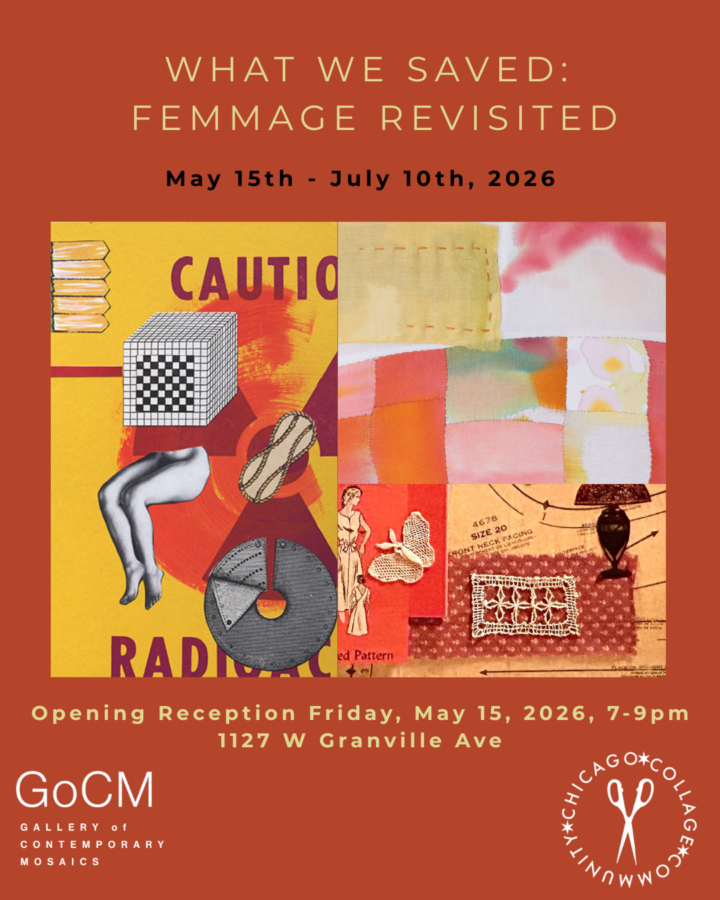

What We Saved: Femmage Revisited
‘What We Saved: Femmage Revisited’ is a juried exhibition organized by The Gallery of Contemporary Mosaics and the Chicago Collage Community. The included work highlights collage as a uniquely feminine art form of saving, fragmenting, and mending to tell women’s stories.
This exhibition aims to honor collage and its history while inspiring contemporary collage artists to reconsider their work through the Femmage framework, which is both openly political and deeply personal.